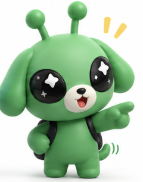
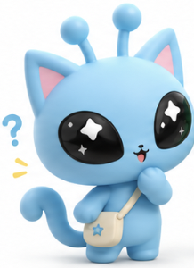

01
표지 — 한 줄로 바뀐 에이전트 주제
0:20대구 축제를 기획하는 에이전트
→
대구 사투리 축제를 매년 꾸준히 열 수 있게 돕는 에이전트
제목 + 위 Before → After 한 줄. 오른쪽에 말손님·토박이 캐릭터(pair 이미지).
"피드백을 받고 에이전트 주제부터 다시 잡았습니다. 한 번 기획하고 끝나는 게 아니라, 매년 결과를 쌓아서 다음 해를 더 잘 열게 돕는 에이전트입니다."
받은 피드백 5개를 어떻게 반영했는지 먼저 보여 주고, 이어서 에이전트를 어떻게 구체화했는지와 사투리 축제를 어떻게 구현할지를 이야기하는 순서입니다. 12장, 약 7분 15초 분량입니다.
제목 + 위 Before → After 한 줄. 오른쪽에 말손님·토박이 캐릭터(pair 이미지).
"피드백을 받고 에이전트 주제부터 다시 잡았습니다. 한 번 기획하고 끝나는 게 아니라, 매년 결과를 쌓아서 다음 해를 더 잘 열게 돕는 에이전트입니다."
| # | 받은 피드백 | 반영 | 상태 |
|---|---|---|---|
| 1 | 신문기사 대신 공공기관·논문·실제 축제 통계로 | 공식·통계 출처 중심으로 재조사 | 반영 |
| 2 | 어떤 에이전트가 어떤 지시사항으로 도는지 구체화 | 지침서 + 단계별 명령 4개 | 반영 계속 강화 |
| 3 | 사투리 콘셉트 도출 논리, 문제 → 기획안 연결 | 문제 포착 → 콘셉트 → 기획안 흐름 + 웹으로 시연 | 반영 |
| 4 | 데이터를 더 방대하게 | 지역 데이터 수집 완료, 리뷰·영상·SNS 인사이트 분석 | 진행 중 |
| 5 | 스쳐 가지 않고 머물게 하는 행동 흐름 | 1박 체류를 목표 1순위로 둔 방문객 여정 | 반영 |
"다섯 개 중 네 개는 반영했고, 데이터 확장은 지금 진행 중입니다. 하나씩 보여 드리겠습니다."
신문기사보다 공공기관 자료, 공문서, 논문, 실제 축제 통계 같은 전문성 있는 자료로 개선 필요
출처 우선순위를 지침에 박고, 공식·통계 자료 중심으로 다시 조사
[확인] 출처 있는 사실 · [해석] · [가설] · [추정]출처 피라미드(공식이 맨 위, SNS가 맨 아래) + 라벨 4개 색 태그.
구조에 맞춰 어떤 에이전트에 어떤 프롬프트나 지시사항으로 돌아가는지 구체화
공통 지침서 1개 + 단계별 명령 4개로 나누고, 명령마다 읽을 것·지시사항·산출물을 정함
| 명령 | 먼저 읽는 것 | 핵심 지시사항 | 산출물 |
|---|---|---|---|
/festival-start | 작년 운영결과·차년도과제 | 필수 조건을 먼저 묻고, 없으면 [가정] 표시. 축제일에서 연간 일정 역산 | 00 결정기록 · 01 기획조건표 |
/festival-research | 팀 통합 조사본 → 필요한 원본 | 출처 표기 통일, 사실과 가설을 나눠 문제 정의 | 02 조사보고서 |
/festival-plan | 00 · 01 · 02 · 단가표 | 가중치로 아이디어 평가, 예산 3안, 폭염·안전, KPI 측정 준비표, 자체 검토 | 03 기획안 |
/festival-review | 03의 KPI + 실제 측정값 | 측정 못 한 지표는 비워 둠, 집행 실적을 단가표에 쌓음 | 04 운영결과 · 05 차년도과제 |
"공통 규칙은 지침서 한 곳에 두고, 단계마다 무엇을 읽고 무엇을 만드는지만 따로 지시했습니다. 지침은 계속 추가하고 강화할 예정입니다."
사투리라는 콘셉트를 어떻게 도출했고, 포착한 문제를 바탕으로 기획안을 어떻게 짤 건지
문제 → 차별점 → 콘셉트 → 기획 장치 순서로 논리를 정리
"사투리가 재밌어서 고른 게 아니라, 대구가 스쳐 가는 도시라는 문제에서 출발했습니다. 음식은 이미 다른 축제가 하고 있으니, 대구에만 있는 말로 붙잡자는 논리입니다."
말로 설명하는 대신, 에이전트가 만든 결과물을 화면으로 보여 준다.
2027/안내페이지/index.html (행사 개요, 무대 시간표, 토론 대회, 실시간 지도, 사투리 능력고사, 10미 포장마차, 체크인 스탬프)안내페이지 라이브 시연 또는 화면 녹화. 백업으로 캡처 3장.
우선 데이터를 더 방대하게 쌓아야 함
지역 데이터는 수집 완료, 사람 데이터와 리뷰·영상·SNS 인사이트는 진행 중
| 데이터 | 내용 | 상태 |
|---|---|---|
| 지역 데이터 | 대구 관광 사업 · 축제 사례 · 사투리 · 팝업·캐릭터·상업연계 (팀원 4명 파트) | 수집 완료 |
| 리뷰·영상·SNS 인사이트 | 수업에서 배운 방법으로 방문객 반응에서 인사이트 찾기 | 진행 중 |
| 사람 데이터 | 대구 안에서 열리는 축제 방문객 데이터 | 조사 중 |
"지역 쪽 데이터는 모았고, 이제 사람이 실제로 어떻게 반응하는지를 리뷰·영상·SNS에서 찾고 있습니다."
대구를 스쳐 지나가는 게 아니라 체류하게 하는 행동 구조, 스토리 흐름 필요
목표 1순위를 '1박 이상 체류'로 두고, 단계마다 머물 이유를 하나씩 배치
"결승을 토요일 밤에 둔 이유가 핵심입니다. 결승을 보면 그날 집에 가기 어렵고, 숙박을 인증하면 혜택을 주고, 다음 날 아침엔 시내 원조가게로 보냅니다."
"(떡볶이앱 비유 — 발표자가 설명) 이런 에이전트가 최종적으로 하면 ○○ 같은 걸 만들 수 있다. 공짜로 바로 모을 수 있는 데이터가 쌓일수록 해마다 더 정확해집니다."
사투리 + 먹거리 부스 길. 넓은 두류공원에 '말로 주문하는 10미 길'을 낸다.
따로국밥 · 막창구이 · 뭉티기 · 동인동찜갈비 · 논메기매운탕 · 복어불고기 · 누른국수 · 무침회 · 야끼우동 · 납작만두
"음식 축제를 따라 하려는 게 아니라, 음식을 사투리로 경험하는 길을 만듭니다. 다른 음식 축제와의 차이가 여기서 생깁니다."


에이전트를 구체화해서, 사투리 축제가 한 번이 아니라 매년 열리게 하겠습니다.
수치 출처는 레포의 local 리서치/통합_조사결과.md, 2027/02_조사보고서.md, 2027/03_기획안.md, 지침 local지침v1.md입니다. 체류시간·유입 비율은 데이터랩을 인용한 언론 수치이고, 원자료는 확인 중입니다.